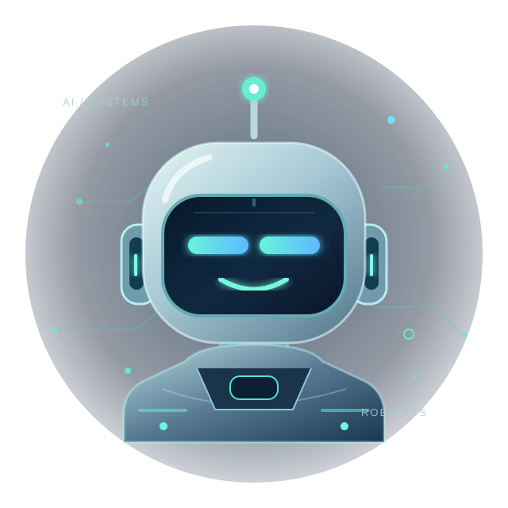

Αυτόνομο Health Kiosk
Μάθημα: Προηγμένη Ρομποτική
Εξελιγμένος σταθμός μέτρησης ζωτικών λειτουργιών με Raspberry Pi 4, αισθητήρες, Computer Vision, τοπική βάση δεδομένων και AI μέσω Ollama.
ΠΡΟΣΩΠΙΚΟ PORTFOLIO · ΠΑΝΕΠΙΣΤΗΜΙΟ ΑΙΓΑΙΟΥΤΜΗΜΑ ΜΗΧΑΝΙΚΩΝ ΠΛΗΡΟΦΟΡΙΑΚΩΝ ΚΑΙ ΕΠΙΚΟΙΝΩΝΙΑΚΩΝ ΣΥΣΤΗΜΑΤΩΝ
Φοιτητής στο Τμήμα Μηχανικών Πληροφοριακών και Επικοινωνιακών Συστημάτων του Πανεπιστημίου Αιγαίου, στη Σάμο.
Με ενδιαφέρουν η τεχνητή νοημοσύνη, η ρομποτική και η δημιουργία εφαρμογών που συνδέουν το λογισμικό με τον πραγματικό κόσμο.

Έξι πανεπιστημιακές εργασίες, με πραγματικές αναφορές, παρουσιάσεις και βίντεο όπου υπάρχουν.
Μάθημα: Προηγμένη Ρομποτική
Εξελιγμένος σταθμός μέτρησης ζωτικών λειτουργιών με Raspberry Pi 4, αισθητήρες, Computer Vision, τοπική βάση δεδομένων και AI μέσω Ollama.

Μάθημα: Τεχνολογία Λογισμικού
Σχεδιασμός και υλοποίηση πληροφοριακού συστήματος διαχείρισης κινηματογραφικών προγραμμάτων και προβολών, με ρόλους χρηστών και REST API.

Μάθημα: Προγραμματισμός στο Διαδίκτυο
Εφαρμογή ιστού για πελάτες και προσωπικό συνεργείου, με διαχείριση οχημάτων, ραντεβού και δικαιωμάτων πρόσβασης.

Μάθημα: Βάσεις Δεδομένων ΙΙ
Σχεδιασμός σχεσιακής και γραφοκεντρικής βάσης για οργάνωση γιατρών, ασθενών, ραντεβού, εξετάσεων και άλλων υπηρεσιών υγείας.

Μάθημα: Εισαγωγή στη Ρομποτική
Κατασκευή αυτόνομου εκπαιδευτικού σταθμού με Raspberry Pi, οθόνη αφής και αισθητήρες για θερμοκρασία, καρδιακούς παλμούς και SpO₂.

Μάθημα: Ψηφιακή Καινοτομία και Επιχειρηματικότητα
Η πανεπιστημιακή εργασία του μαθήματος, διαθέσιμη ως παρουσίαση PowerPoint μέσω Google Drive.
Οι αναφορές ανοίγουν σε νέα καρτέλα. Οι εργασίες πραγματοποιήθηκαν στο πλαίσιο πανεπιστημιακών μαθημάτων, σε συνεργασία με τα μέλη των αντίστοιχων ομάδων.
Κατά τη διάρκεια της πρακτικής μου ασχολήθηκα με την ανάπτυξη ψηφιακών εφαρμογών και τη βελτίωση διαδικασιών που αφορούν πολίτες και εργαζομένους του νοσοκομείου.
Ανάπτυξη βοηθού στην ιστοσελίδα του νοσοκομείου, για πληροφορίες σχετικά με υπηρεσίες, κλινικές, εφημερίες, ραντεβού και συχνές ερωτήσεις, με δυνατότητα διαχείρισης μέσω WordPress.
Οργάνωση καθημερινών διαδικασιών σε αναζητήσιμες, βήμα-βήμα οδηγίες για το προσωπικό, με έμφαση στην ευχρηστία και τη γρήγορη πρόσβαση στην πληροφορία.
Δοκιμαστική εφαρμογή καταγραφής ζωτικών σημείων, μελέτη βελτίωσης της ροής ακτινολογικών εξετάσεων και τεκμηρίωση τεχνικών προβλημάτων.
Στο Τμήμα Μηχανικών Πληροφοριακών και Επικοινωνιακών Συστημάτων συνδυάζω την ανάπτυξη λογισμικού με τον κόσμο των επικοινωνιών. Με ενδιαφέρει να εφαρμόζω όσα μαθαίνω σε πραγματικά έργα — από εφαρμογές ιστού και ρομποτικά συστήματα μέχρι την τεχνητή νοημοσύνη και τις σύγχρονες τεχνολογίες μετάδοσης πληροφορίας.
Για επικοινωνία σχετικά με κάποιο έργο, ιδέα ή δυνατότητα συνεργασίας.